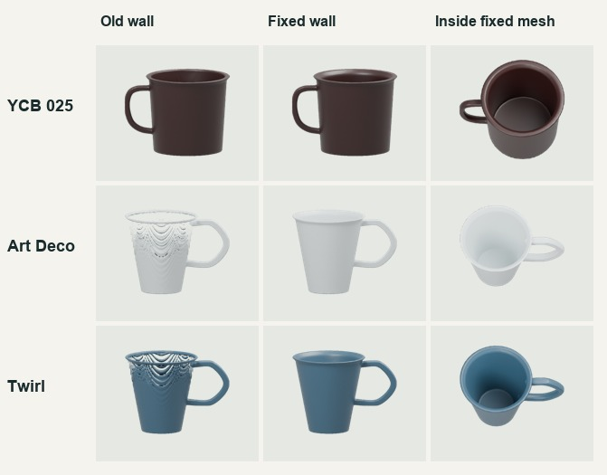
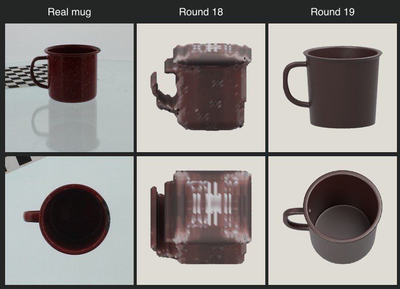

A handle can look open even when the cup leaks. We imported each downloaded mesh into Blender and checked the handle, the floor and the wall around eight heights.

| Mug | Wall hits before | Wall hits after | Handle after |
|---|---|---|---|
| YCB 025 | 256/256 | 256/256 | 25/25 |
| Art Deco | 179/256 | 256/256 | 25/25 |
| Twirl | 227/256 | 256/256 | 25/25 |
Each repaired mesh had one closed surface and a floor beneath all 25 center probes. The two Dottir mugs measured 82.8 mm in the mesh against 83 mm in the lab reports. We entered the measured depth as 92% of the nominal 90 mm height. The YCB mug’s physical depth is unknown.
Source measurements and photographs: Dottir’s SGS reports. Build a mug from your photos.
SRL Lab · R-004 · Rounds 18 and 19

| Same YCB mug | Round 18 | Round 19 |
|---|---|---|
| Outline overlap at 30° / 60° | 67.8% / 46.5% | 73.9% / 74.5% |
| Mean outline overlap | 57.1% | 74.2% |
| Depth to first surface | 1.8% of height | 88.0% of height |
| Enclosed handle passage | 0 / 25 | 25 / 25 |
| Connected pieces | 25 | 1 |
| Mesh generation | 0.16 s · iOS simulator | 0.12 s · Mac CPU |
| Blender import this run | 1.60 s | 0.52 s |
Download Round 18 GLB · Download Round 19 GLB
The new fit uses manually marked side and rim dimensions, a traced handle, and a round-body assumption. An overhead photo shows the rim. The interior floor was placed at an assumed depth. All 25 center rays reach it, and the underside closes beneath it. The handle passes both the bounded front-view ray test and the connected surface check. A capped control using the same handle still passed the handle test but gave 0% interior depth.
Held-out outline overlap measures two unused views with the same estimated camera. It cannot establish real-world dimensions. Timings exclude uploading, marking, downloading and rendering. The two mesh builds ran in different environments.
Source images: front, right, overhead. Cropped N1 0° and 90°, N5 0° of 025_mug by Berk Calli and colleagues, YCB Object and Model Set, CC BY 4.0.